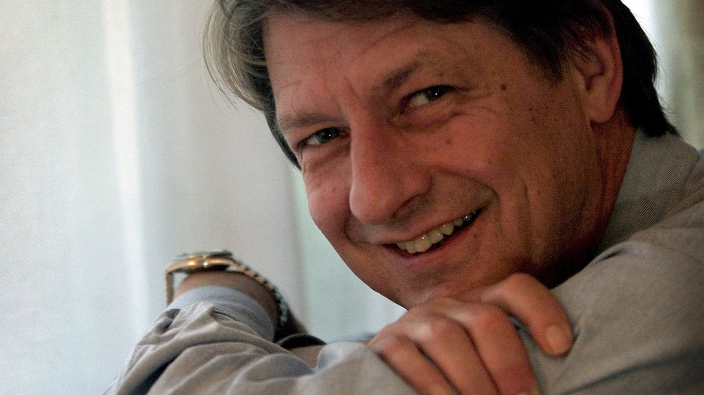
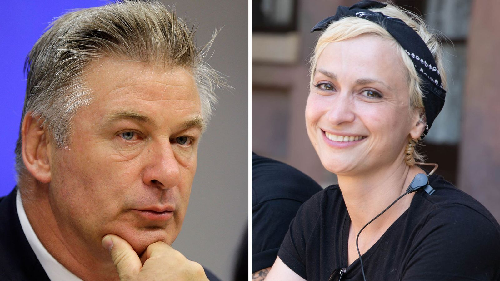
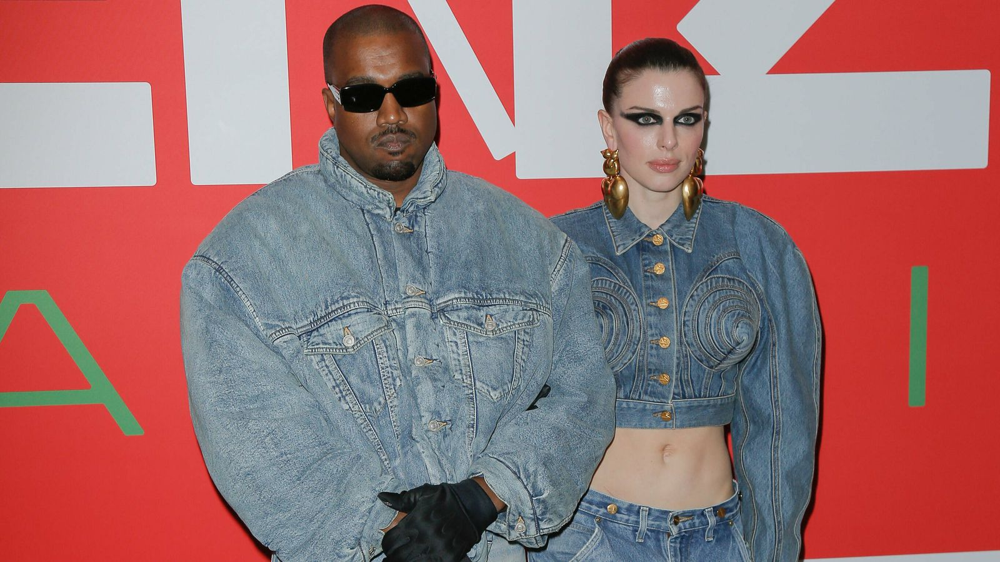
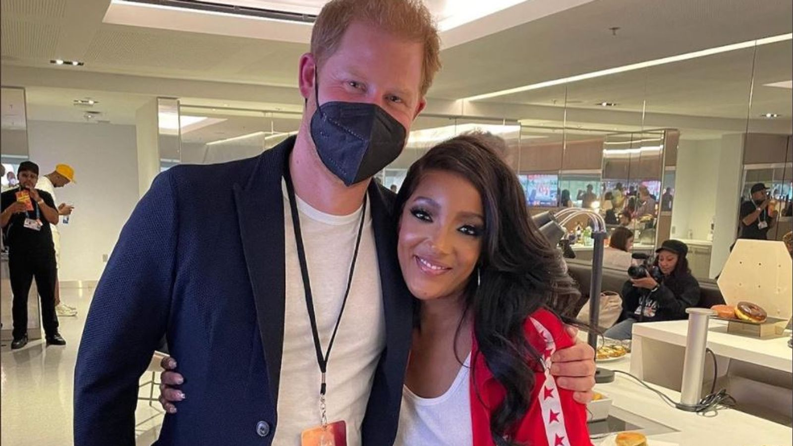
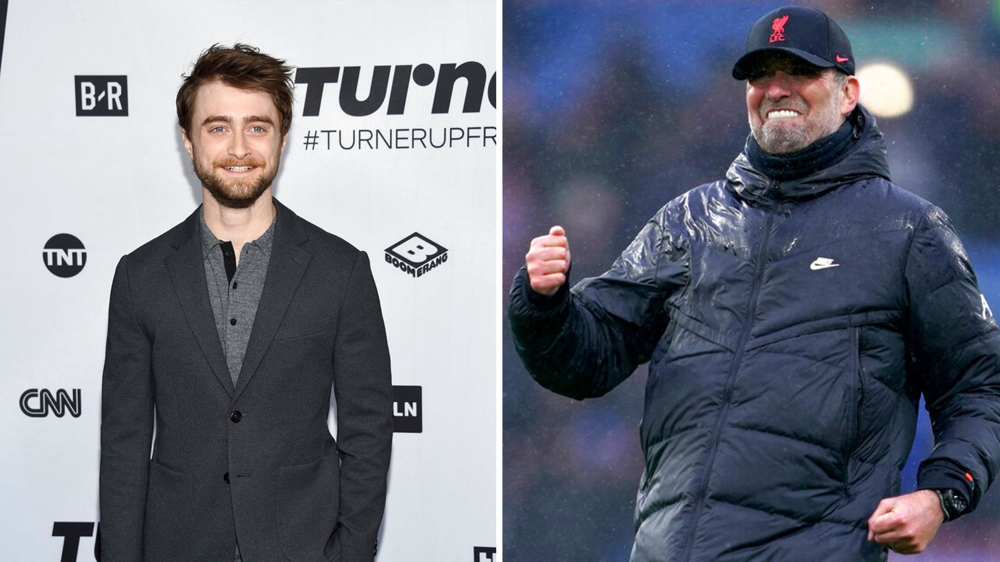
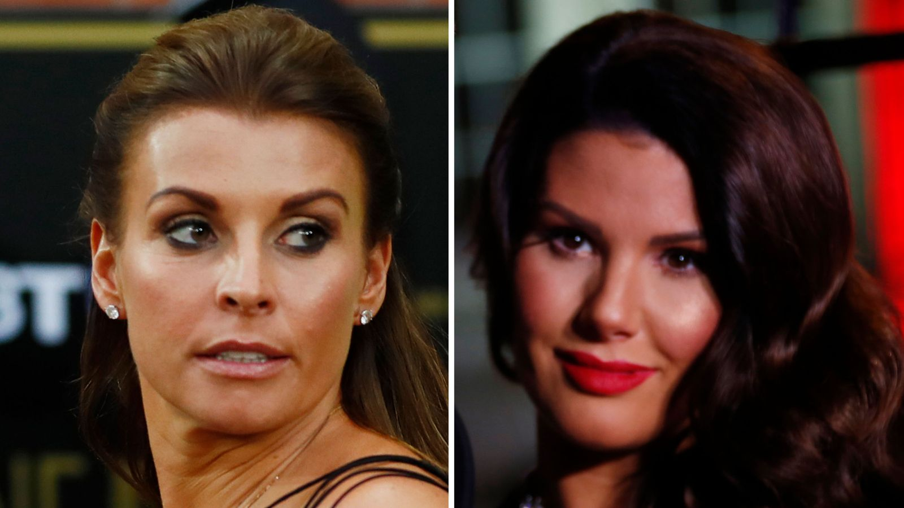

'Laugh-out-loud' writer and
political satirist PJ O'Rourke dies.
Click the image to see the whole Story

Rust shooting: Alec Baldwin
named in lawsuit brought by husband
of cinematographer Halyna Hutchins.
Click the image to see the whole Story

Kanye West and Julia
Fox split amid rapper's
Instagram posts about Kim
Kardashian reunion.
Click the image to see the whole Story

Super Bowl singer Mickey Guyton
shares Prince Harry photo
following the game -
'I even curtsied in my track suit'
Click the image to see the whole Story

British LGBT Awards: Jurgen Klopp,
Daniel Radcliffe and Jade
Thirlwall among the nominees
Click the image to see the whole Story

Coleen Rooney refused permission
to sue Rebekah Vardy's agent for
alleged misuse of private information.
Click the image to see the whole Story